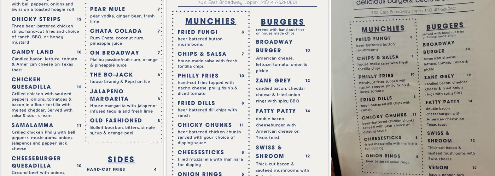
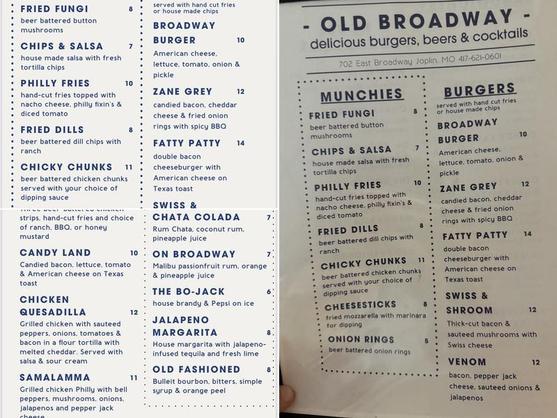

WEBSITE CONCEPT / DESIGN PREVIEW, prepared for Old Broadway Club
Old Broadway Club
Dive Bar & Grill
702 E Broadway St, Joplin, MO 64801 · (417) 621-0601
The Prints
Photos
Real photos of the bar's own menu boards, plus one stock photo of a pool hall to show the games side. Every caption says exactly what the photo shows.

The bar's printed menu: cocktails like the Chata Colada and Jalapeno Margarita, sandwiches including the Samalamma and Chicken Quesadilla, plus munchies and burgers. Photo from the business's restaurant listing.

The menu board: Fried Fungi, Philly Fries, and the burger lineup, Broadway Burger through Venom. Photo from the business's restaurant listing.Stock photo. Old Broadway Club has pool tables in the room; this photo shows the general scene, not the actual bar.